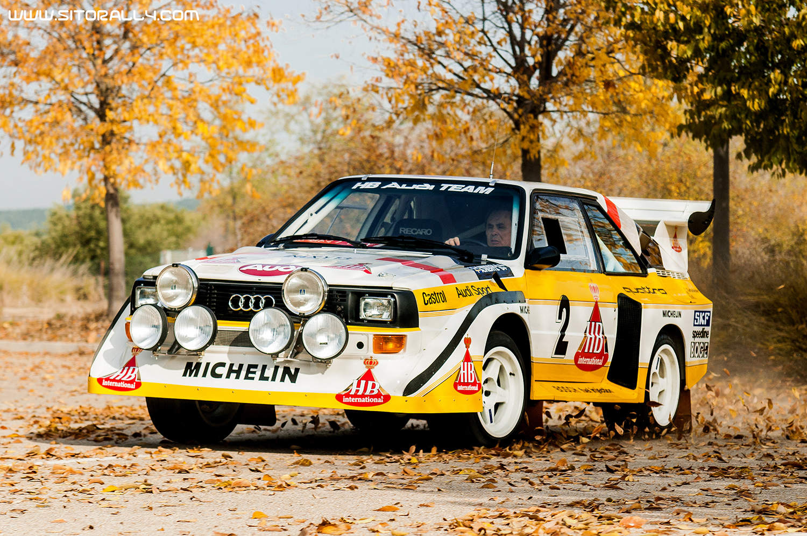
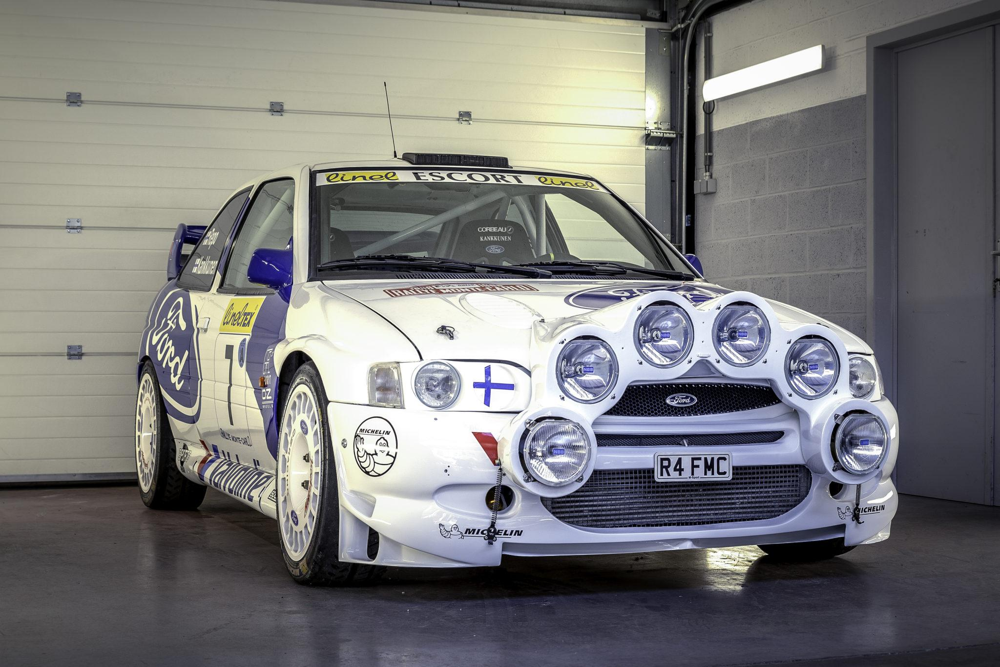
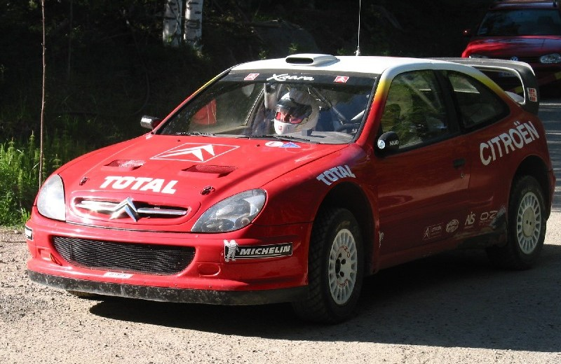
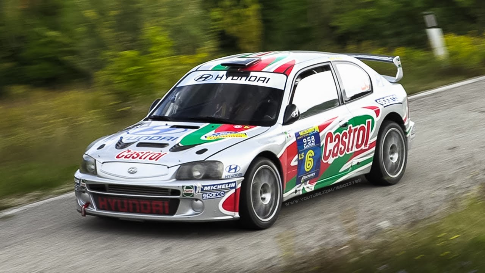
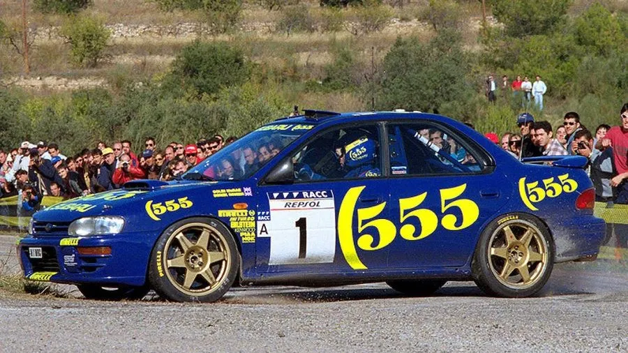
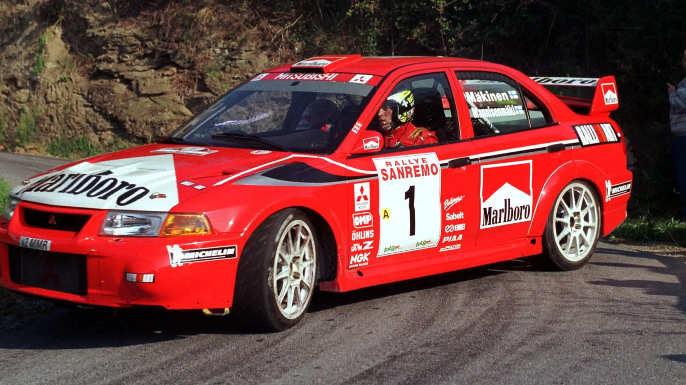
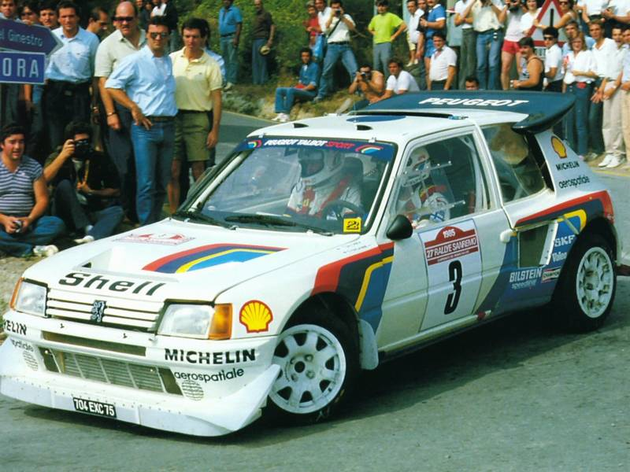
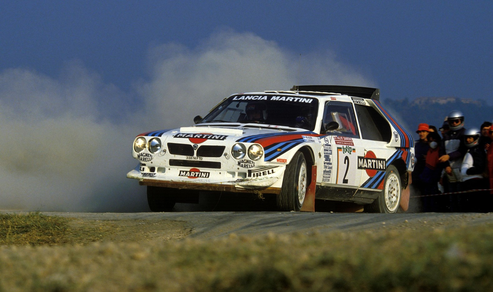

Audi
En la década de 1980, Audi formó una alianza emblemática con el equipo de rallys Audi Sport y el patrocinador principal, Martini & Rossi, conocido por su vermut. Esta colaboración marcó el inicio de una era dorada en el mundo de los rallies para Audi. El legendario Audi Quattro, introducido en 1980, se convirtió en el ícono de la época y redefinió el panorama del rally. Equipado con tracción a las cuatro ruedas, el Quattro se destacó en terrenos variados y condiciones desafiantes, llevando a Audi a la cima de los campeonatos mundiales de rally. Durante los primeros años de la década, el equipo Audi Sport Martini Racing demostró su dominio en el Campeonato Mundial de Rally de la FIA, asegurando varios títulos de constructores y consolidando la posición de Audi como líder en innovación tecnológica. En 1983, el Audi Sport Quattro S1, evolución del Quattro original, alcanzó nuevas alturas con victorias en el Rally de San Remo y el Pikes Peak International Hill Climb, destacando la versatilidad y potencia del equipo. La cúspide llegó con el Audi Sport Quattro E2, un coche de rally revolucionario que continuó acumulando éxitos en el Campeonato Mundial. Pilotos como Hannu Mikkola y Walter Röhrl dejaron su huella, llevando a Audi a la gloria y contribuyendo a múltiples títulos de pilotos y constructores. A finales de la década de 1980, Audi se aventuró con el Audi 200 Quattro Trans-Am en competiciones de turismos en Estados Unidos, demostrando su versatilidad y éxito continuo en diferentes disciplinas. El legado de Audi en los rallies, marcado por la asociación con Martini Racing, perdura en la memoria de los fanáticos. Los colores distintivos blanco, rojo y azul son recordados con cariño como símbolo de una era dorada en la historia del automovilismo. A pesar de los desafíos posteriores, la colaboración Audi-Martini Racing sigue siendo un hito destacado en el mundo de las competiciones automovilísticas.
Ford World Rally Team
Ford World Rally Team es el equipo oficial de Ford que compite en el Campeonato Mundial de Rally. Tenía su base en Cumbria, Reino Unido,5 aunque hasta 1996 la tuvo en Boreham. La marca compitió de manera esporádica hasta 1997 y luego hasta 2012 y tras cinco años de ausencia regresó en 2018. La marca compitió en el Campeonato del Mundo de manera oficial desde 1973 hasta 1979, y luego intermitentemente desde 1986 hasta 1996, alternando representación con equipos privados. El equipo se formó definitivamente en 1997 gracias al contrato establecido entre esta y la empresa británica M-Sport presidida por el expiloto de rally Malcolm Wilson que se encargó de dirigir y coordinar el equipo además de desarrollar los vehículos utilizados en el mismo. El equipo debutó en el Rally de Montecarlo de 1997 y consiguió su primera victoria ese mismo año en el Rally Acrópolis con Carlos Sainz como autor. Desde esa temporada hasta su retirada en 2012 el equipo compitió con tres vehículos diferentes: el Ford Escort (WRC) hasta 1998, el Ford Focus (WRC) desde 1999 hasta 2010, y el Ford Fiesta RS (WRC) a partir de 2011. El Focus es el que mayores números estableció con un total de 137 participaciones oficiales y 44 victorias. La marca del óvalo logró en su trayectoria en el campeonato del mundo tres títulos de marcas: 1979, 2006 y 2007; así como dos títulos de pilotos, con Björn Waldegård en 1979 y Ari Vatanen en 1981. Ford disputó un total de 308 pruebas y consiguió 82 victorias, 315 podios y además logró finalizar en los puntos en 158 pruebas consecutivas entre el Rally de Montecarlo de 2002 y Rally Cataluña de 2012. Entre los pilotos más destacados que corrieron con el equipo figuran Mikko Hirvonen que logró catorce victorias, Marcus Gronholm que consiguió doce y Colin McRae con nueve. Actualmente compite con dos Fords Puma Rally1 pilotados por Pierre-Louis Loubet y por Ott Tänak.
Citroën Total World Rally Team
El Citroën Total World Rally Team es un equipo de rally oficial de Citroën que ha competido en el Campeonato Mundial de Rally (WRC) durante muchos años . El equipo ha tenido una rica historia en el (WRC), logrando numerosos campeonatos y victorias a lo largo de los años. Citroën ha sido uno de los fabricantes más exitosos en la historia del WRC. Han ganado múltiples campeonatos de constructores y pilotos, y han tenido algunos de los pilotos más destacados en sus filas. Uno de los pilotos más exitosos en la historia del equipo es Sébastien Loeb, quien ganó nueve campeonatos mundiales consecutivos con Citroën. En cuanto a sus titulos en la categoria de constructores ha ganado en los años 2003, 2004, 2005, 2008, 2009, 2010, 2011 y 2012, en esa época el equipo demostró una dominación notable en el campeonato, estableciendo un nivel alto de rendimiento y consistencia. Esta dominación total del campeonato de constructores se notó en el de pilotos, ganando Citroën Total World Rally Team los campeonatos consecutivos de 2004 a 2012 todos ellos ganado Sebastian Loeb, además Carlos Sainz también ganó en 1990 con Citroën. Compitió con Xsara WRC de 2001 a 2005, C4 WRC 2007 a 2010 y a partir empezó a competir con la submarca de Citroën destinada a vehiculos deportivos DS, con un DS3 WRC pero en 2017 volvio a Citroën usando el C3 WRC. Actualmente sigue compitiendo con el C3 WRC.
Hyundai Motorsport
La división deportiva de Hyundai hizo su debut en el WRC en la temporada 2000 con el Hyundai Accent WRC pero se retiró temporalmente en 2003 por razones estratégicas. Regreso en 2014 con el nuevo Hyundai i20 WRC y marcó un nuevo capitulo en su participación en los rallies. Durante las primeras temporadas del regreso se centró en desarollar y mejorar su coche y acumular experiencia y aprendizaje, y en 2016 lograron ganar su primer rally, en 2019 ganaron el campeonato de constructores. Actualmente siguen corriendo con la nueva generación de Hyundai i20 en su versión Rally1.
Subaru World Rally Team
En 1980 Subaru ingresó en el (WRC) pero no fue hasta 1990 que establecieron formalmente el Subaru World Rally Team (SWRT), con el icónico Subaru Legacy RS. A partir de la década de 1993 empezaron a usar el Subaru Impreza 555, este se convirtió en el automóvil más emblemático del equipo. Pilotado por Richar Burns y Colin Mcrae, en el 1995 Subaru ganó su primer título de constructores. A principios del 2000 la colaboración con prodrive fue esencial para el éxito continuo de SWRT. Richard Burns ganó en 2001, pero por desgracia iba avanzando la década y la competencia se intensificaba con otros fabricantes y subaru luchaba por seguir dominando el campeonato, hasta que a finales de la década de los 2000 Subaru se retiro oficialmente del WRC por razones financieras y estratégicas, fue un gran golpe para todos lo fanáticos ypara el mundo del rally, ya que ha sido una marca dominante durante muchos años.
Mitsubishi Ralliart
La participación de Mitsubishi Ralliart comenzó en el WRC en la década de 1980 con el Mitsubishi Starion pero fue en la década de 1990 cuando Mitsubishi Ralliart destacó, en esta década comenzó participando con el Mitsubishi Galant VR-4 siendo competitivo y estableciendo a Mitsubishi como un competidor en el WRC. El dominio empezó en la segunda mitad de la década de 1990, entre 1996 y 1998 ganó 3 títulos consecutivos, gracias al pilotaje de Tommi Mäkinen de un Mitsubishi Lancer Evolution. A pesar de los éxitos Mitsubishi se retiró en 2002 bajo problemas económicos y estrategia. Mas tarde regresó en 2004, pero fue breve y no llegó a los niveles de éxito anteriores.
Peugeot Talbot Sport
Peugeot ingresó en el mundo del rally con el Talbot Sport en la década de 1980, pero el primer coche competitivo de peugeot fue el Peugeot 205 Turbo 16 y marcó el inicio de su participación en el WRC. En 1985 y 1986 Peugeot ganó el campeonato de constructores con el 205 Turbo 16, después se pasó al 405 T16 y ganó tambien el campeonato de constructores en 1988 y 1989 además del de pilotos en 1986 y 1987 de la mano del piloto Juha Kankkunen. Por desgracia despues de la temporada 1989 por problemas financieros y el cambio de regulaciones dejó el campeonato durante 10 años. Volvió en 1999 con el 206 WRC y ganó el titulo de constructores y pilotos en el 2000 y 2002 conducido por el piloto Marcus Grönholm, pero en 2005 se retiró definitivamente,
Lancia Martini Racing
Lancia Martini Racing se formó con la asociación de Lancia y Martini en la década de 1970, entonces Martini & Rossi, conocido por su marca de vermut, se convirtió en patrocinador principal de los equipos de competición de Lancia, probaron a participar en varias competiciones pero donde alcanzaron la fama fue en el rally, asique decidieros apostar por esta disciplina. En esta década de 1970 el Lancia Stratos HF dominó el Campeonato Mundial de Rally, ganando tres titulos de constructores consecutivos de 1974 a 1976. A mediados de la siguiente década (1980) Lancia continuo su éxito con el Lancia Rally 037, en 1983 Walter Röhrl llevó al 037 a ganar el título de pilotos y contribuyó a otro título de constructores para Lancia Martini Racing. Su último lanzamiento fue el Lancia Delta S4, un coche muy potente y tecnologicamente avanzado para la época, así gano el campeonato de constructores de 1986 pero ese año las preocupaciones de seguridad marcaron el fin de una era del rally. Lancia tuvo que reinventar de cero su coche para cumplir las nuevas normativas y nunca volvio a dominar como antes, seguio compitiendo en la década de 1990 pero sin destacar y al final de esta se retiró. Aún asi la colaboración con Martini Racing queda como una de las más emblemáticas y sus colores blanco, azul y rojo son recordados con cariño por los fanáticos del rally.
Toyota Gazoo Racing

Toyota empezo en el (WRC) em la década de 1970 participando con modelos como el Corolla y el Celica, pero no lograros titulos importantes, comenzarón a ganar éxitos en la década siguiente (1980) con el Celica Twin Cam Turbo, ganado varios rallies y estableciencose como competidores serios. La verdadera era de éxito llego en 1990 con el Toyota Celica GT-Four con tracción integral, toyota gano cuatro titulos de constructores consecutivos de 1993 a 1996, pero a pesar de los éxitos al final de la temporada de 1999 toyota se retiró oficialmente debido a razones económicas y estratégicas. En 2015 y 17 años despues de su retiro, anunció su regreso formando el equipo Toyota Gazoo Racing, ahora vuelve a ser un competidor destacado, ganando el campeonato de pilotos en 2019 y muchos rallies en las ultimas temporadas, actualmente corriendo con el toyota Yaris desde 2015.